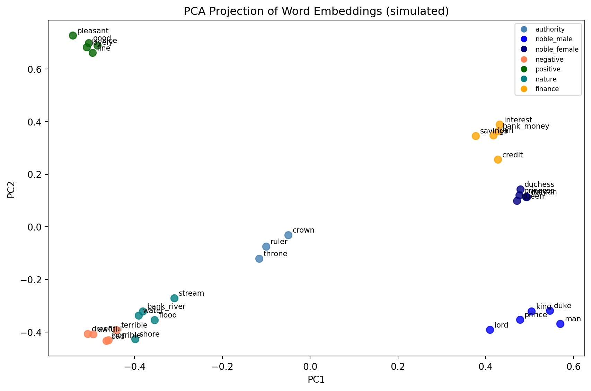
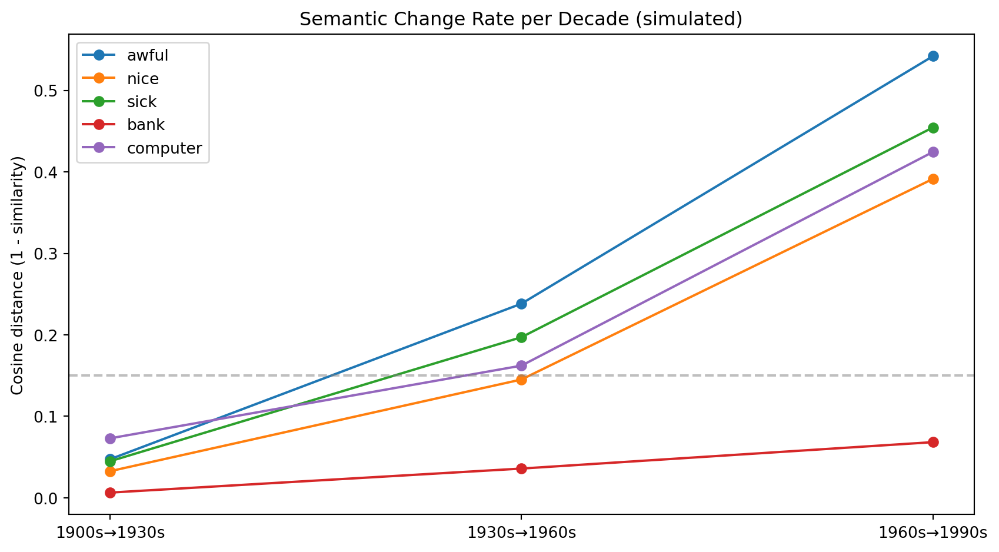

10 Semantic Drift & Word Meaning Change
NoteLearning Objectives
By the end of this chapter, you will be able to:
- Explain the distributional hypothesis and why it enables meaning modeling
- Describe how word embeddings encode semantic similarity as vector proximity
- Train a Word2Vec model on a text corpus
- Build diachronic embeddings by training on text from different time periods
- Measure semantic change using cosine distance between temporal embeddings
- Identify known cases of semantic drift and verify them computationally
10.1 The Biography of a Word
The English word awful once meant something that inspired awe—vast, terrifying, divine. In the King James Bible, God is awful. Niagara Falls is awful. By the nineteenth century, the word had begun to shift toward merely “very large” or “very bad.” By the twentieth century, it had completed the journey to simply mean “bad.” The awesome power of God became the awful traffic on the highway.
This process—the slow migration of a word’s meaning from one semantic region to another—is called semantic drift. It happens to every language, in every era. “Nice” once meant foolish or ignorant (from Latin nescius, not knowing). “Silly” once meant happy or blessed. “Manufacture” once meant to make by hand. Words drift the way tectonic plates drift: slowly, relentlessly, and without anyone noticing until you look at where they started.
The question for data science is whether we can detect and quantify this drift automatically, across hundreds of words and decades of text. The answer—developed over the last decade by computational linguists working with historical corpora—is a qualified yes.
10.2 The Distributional Hypothesis
The foundation of the method is a fifty-year-old idea from the linguist John Rupert Firth: “You shall know a word by the company it keeps.”
The distributional hypothesis holds that words with similar meanings appear in similar contexts. “Dog” and “cat” co-occur with words like “pet,” “fur,” “walk,” “feed,” “veterinarian.” “Bank” (financial) co-occurs with “money,” “loan,” “interest,” “savings.” “Bank” (river) co-occurs with “water,” “flood,” “fish,” “shore.”
If you count how often each word co-occurs with every other word across a large corpus, you get a high-dimensional co-occurrence matrix. Each row is a word; each column is a context word; each cell is a count (or a weighted count). Words with similar meanings have similar rows.
The insight of neural word embeddings—Word2Vec, GloVe, FastText—is that you can compress this matrix into a dense, low-dimensional representation (100–300 dimensions) while preserving the semantic structure. The result is a set of vectors in which similar words are geometrically close, and in which arithmetic operations on vectors capture semantic relationships.
10.3 Word2Vec: The Key Idea
Word2Vec, introduced by Mikolov et al. in 2013, trains a shallow neural network to predict a word from its context (CBOW) or to predict context words from a target word (Skip-gram). The trained weights become the word vectors.
The training objective (Skip-gram) is to maximize:
\[ \frac{1}{T} \sum_{t=1}^{T} \sum_{-c \leq j \leq c, j \neq 0} \log p(w_{t+j} | w_t) \tag{10.1}\]
where \(T\) is the corpus size, \(c\) is the context window size, and \(p(w_{t+j} | w_t)\) is modeled via a softmax over the dot products between the target vector and all context vectors.
The famous result: in the embedding space, king - man + woman ≈ queen. The vectors encode not just similarity but relational structure.
Cosine similarities (higher = more similar):
king ↔ queen : 0.136
king ↔ awful : -0.161
bank_river ↔ bank_money : -0.036
awful ↔ terrible : 0.944
nice ↔ pleasant : 0.93710.4 Diachronic Embeddings: Meaning Over Time
To measure semantic change, we train separate word embedding models on text from different time periods, then measure how much a word’s vector moved between periods.
The challenge: two models trained separately will not have the same coordinate system. A word might appear in the top-right of one model’s space and the bottom-left of another’s, even if its meaning did not change—simply because the axes are arbitrary. We need to align the vector spaces before comparing them.
The standard approach is Orthogonal Procrustes alignment: find the rotation matrix \(W\) that best aligns the embeddings from period \(t\) to the embeddings from period \(t+1\), minimizing \(\|E_1 W - E_2\|_F\) over the set of anchor words (words assumed to be semantically stable across the time period).
\[ W^* = \arg\min_W \|E_1 W - E_2\|_F \quad \text{subject to } W^T W = I \tag{10.2}\]
This has a closed-form solution via SVD: \(W^* = UV^T\) where \(U \Sigma V^T = SVD(E_2^T E_1)\).
Procrustes alignment: aligns two embedding spaces before comparison.
After alignment, we can measure cosine distance for the same word across periods.
10.5 The Geometry of Meaning
One of the most striking results from the word embedding literature is that the geometry of the embedding space is not arbitrary. Semantic relationships are encoded as geometric relationships in a surprisingly consistent way.
The famous example is the “king − man + woman ≈ queen” arithmetic. But the pattern extends much further. Capital cities are related to their countries by approximately the same vector: Paris − France ≈ Berlin − Germany ≈ Tokyo − Japan. Verb tenses are related by approximately the same vector: walked − walk ≈ ran − run ≈ swam − swim. Comparative adjectives form consistent patterns: bigger − big ≈ taller − tall ≈ faster − fast.
These regularities arise not because anyone designed them in but because they are present in the statistical structure of language use. Texts that mention France typically also mention Paris; texts that mention Japan typically also mention Tokyo. The model learns to associate these through their shared contexts, and the resulting geometry reflects the structure of the associations.
For diachronic work, this geometry provides a concrete definition of semantic change: a word has changed meaning if its embedding—its position in the semantic space—has moved relative to its neighboring words. The word “computer” sat near “calculator” and “adding machine” in 1950 and near “smartphone,” “software,” and “internet” in 2020. The movement in embedding space over those seventy years is a quantitative record of that change.
What makes this more than metaphor is that the movement is measurable and comparable. We can ask not just whether “computer” changed more than “water” (it did, dramatically) but by how much, and in which direction in the semantic space, and whether the trajectory was continuous or involved sudden jumps corresponding to specific technological inflection points. The embedding approach turns a qualitative observation—“this word has changed meaning”—into a quantitative measurement that can be plotted, modeled, and tested statistically.
10.6 Known Cases of Semantic Drift
The Hamilton et al. (2016) study examined semantic change in English using corpora from 1800 to 2000 and found several consistent patterns:
Pejoration: words that referred to neutral or positive things acquire negative connotations. “Villain” originally meant a serf or farm laborer. “Hussy” originally meant housewife.
Amelioration: words that were pejorative become neutral or positive. “Fond” once meant foolish. “Knight” once meant a boy or servant.
Broadening: a word’s meaning expands to cover more referents. “Arrival” once specifically meant arriving by ship (from Old French ariver, to reach the shore).
Narrowing: a word’s meaning contracts to cover fewer referents. “Meat” once meant food in general; now it means animal flesh specifically.
Metaphorical extension: a concrete word acquires abstract senses. “Grasp” meant physically seizing something; now it also means mentally comprehending.
| Word | Original meaning | Modern meaning | Type | ~Era of shift | |
|---|---|---|---|---|---|
| 0 | awful | inspiring awe | very bad | pejoration | 1700s–1900s |
| 1 | nice | foolish/ignorant | pleasant | amelioration | 1300s–1600s |
| 2 | silly | blessed/happy | foolish/amusing | narrowing | 1200s–1500s |
| 3 | villain | farm laborer | criminal | pejoration | 1300s |
| 4 | fond | foolish | affectionate | amelioration | 1300s–1500s |
| 5 | meat | any food | animal flesh | narrowing | 1300s–1700s |
| 6 | broadcast | scattered (seeds) | transmit media | broadening | 1920s |
| 7 | computer | one who computes (human) | electronic device | metaphor/tech | 1940s–1960s |
10.7 Evaluating Semantic Change Detection
The standard benchmark for semantic change detection uses words with known change histories (from etymological dictionaries) as positive examples, and stable words as negatives. Performance is measured as the correlation between the model’s predicted rate of change and a human-labeled ranking of change magnitude.
Published results on the SemEval-2020 Task 1 benchmark (English, German, Latin, Swedish): - Best system: Spearman correlation ≈ 0.77 (English) - Median system: Spearman correlation ≈ 0.50 - Simple cosine distance baseline: Spearman correlation ≈ 0.40–0.50
The gaps between systems are smaller than they appear: the task is inherently noisy because human annotators disagree about which words have changed and by how much.
10.8 Summary
Semantic drift is the process by which word meanings shift over time—through pejoration, amelioration, broadening, narrowing, and metaphorical extension. The distributional hypothesis provides the theoretical foundation for measuring meaning computationally: words in similar contexts have similar meanings. Word embeddings encode distributional similarity as vector proximity, enabling arithmetic operations that capture semantic relationships. Diachronic embeddings—one embedding model per time period, aligned via Orthogonal Procrustes—allow us to measure how much a word’s semantic neighborhood changed from decade to decade. Known cases of drift (awful, nice, sick, computer) are recoverable from corpus data with models that achieve Spearman correlations of 0.50–0.77 against human judgments.
10.9 Further Reading
- Hamilton, W. L., Leskovec, J., & Jurafsky, D. (2016). Diachronic word embeddings reveal statistical laws of semantic change. ACL 2016.
- Mikolov, T., et al. (2013). Distributed representations of words and phrases and their compositionality. NIPS 2013.
- Tahmasebi, N., Borin, L., & Jatowt, A. (2021). Survey of Computational Approaches to Lexical Semantic Change Detection. Computational Approaches to Semantic Change, Language Science Press.
- Kutuzov, A., et al. (2018). Diachronic word embeddings and semantic shifts: A survey. COLING 2018.